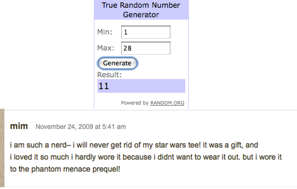
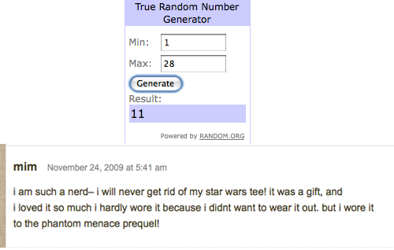

Happy Thanksgiving Everyone! What better way to start the day than to announce the winner of the giveaway!

Congrats mim! Der will be in touch regarding your ruffle tee!

Happy Thanksgiving Everyone! What better way to start the day than to announce the winner of the giveaway!

Congrats mim! Der will be in touch regarding your ruffle tee!

This is Turkey Eve and and I’m so excited I can hardly control myself, as we are only 2 days away from my actual favorite holiday! I love Thanksgiving time and no, it’s not for the food. This Tipsy girl spends her holiday getting a little bit tipsy while plotting her Black Friday gameplan with all the other women in her family. I have started plotting early over here. This year I’ll be needing a few extra sugar free red bulls in my Black Friday survival kit because my local mall is opening at 12am for midnight madness . No, I am not insane. This is a bargain hunter’s dream come true and I wouldn’t miss it for the world. There are some bargains that just may be worth risking an altercation with a sleep deprived shopaholic maniac.
*I’ll report back on any Black Friday injuries sustained. You know, besides my credit card.
If you are like me, you’ve run out of time to get a manicure in before Thanksgiving. So I’m going to share with you a little secret combo that will get your nails in decent shape in no time.

Brush the OPI oil all along your nail bed, rub that in. Take the Aquaphor lip treatment and dab it at the base of each fingernail, rub that all around. Then finish everything off with a little squeeze of the Neutrogena Fast Absorbing Hand Lotion. That’s it! It’s super quick and it’ll have your fingers looking 1000% better in no time. I also keep these items in my car* or purse so that if I’m out and about and in need of some nail resuscitation.
*all steps can be completed sitting at a red light (TRUE STORY)

So, I am sure you all have fabulous lives where you have about a trillion holiday parties lined up and you have a super cute outfit lined up for each. Do you know what you are probably missing from that outfit? A clutch! A nifty little bag to accompany your sassy frass dress. Well, my favorite store has so many adorable ones to choose from with holiday flair!

Sooooo we weren’t really planning on doing this sort of thing, but we had many many requests via The Working Closet Flickr Pool. So we thought what the heck. Why not. The original idea came from the want for J. Crew ruffleness or flowers and life getting in the way. So we thought, why couldn’t we make something like that? We’re crafty! And then the CrafTEE was born and a tutorial was requested. After the tutorial, some people asked for an Etsy shop because they weren’t crafty. And so ShopTipsy was born in the hopes of making the world a better place, one ruffle and one flower at a time.
So today is your lucky day, today we are giving away one Ruffle Tee from our shop!!
To enter the giveaway, just answer the following question in the Comments section of this post. Because we are a Tipsy crew:
“What t-shirt will you never get rid of and why?”One entry per person. No entries after 12:00 am Central Time Wednesday. Winners will be randomly selected from among entrants. Winners will be announced at 9:00 am Central Time Wednesday.

Feeling a little bit fancy pants, but don’t wanna blow all your dough?? This one is for YOU!
Funky tights are an inexpensive way to change up an outfit.. lets take this simple sweater dress:
Old Navy, Womens Cowl Neck Sweater Dress

Add any of these and voila’ … A whole new look for under $10 bucks!
Hey I didn’t say we’d be able to afford EVERYTHING we post here, but a girl can dream can’t she? The holidays ARE coming up, aren’t they? Miracles can happen CAN’T THEY??!
About a year ago, the Tipsy girls thought we needed an excuse to get together once a month to eat fattening yummy food, gossip, and, oh yeah, drink! (po)Keno was the answer to our prayers. Over the past year, old friends have meshed with new friends, and I feel the need to share our recipe for success!
Step 1: Food.

Step 2: Drinks

Step 3: Keno Cards and Markers

Step 4: Concentrated Playing

Step 5: Gifts

Step 6: FABULOUS Friends!

I went on a glorious honeymoon in Breckenridge, Colorado. No, it isn’t your typical honeymooner destination and we had our reasons for choosing it, but it was fantastic…and THAT is a post for another day. Today I am going to have a serious talk with you all regarding a purchase that I made on my honeymoon. I fell deeply and madly in love with …..a leather clutch wallet (sorry husband of mine) made by Hobo International. The versatility of the design, the soft leather… I was like a teen girl on opening night of Twilight, crushing hard. (BTW, I recently watched Twilight and you may actually see me at the next opening night or stalking Robert Pattinson, no plans are set in stone yet) So, I purchased the $118.00 wallet, making this the most expensive wallet I have ever owned. Take a look at her in all her glory….

So, imagine my surprise when I get home and am browsing my local Target and happen upon THIS!! ARE YOU KIDDING ME????

Seriously, I should have known better.


Recent Comments